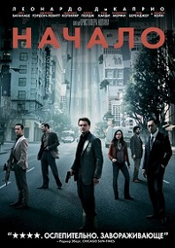
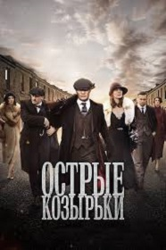
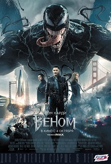
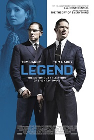
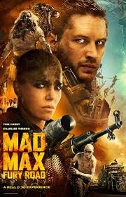
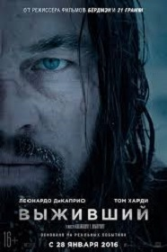
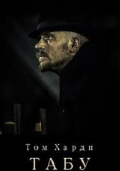

Том Харди – британский актёр театра и кино. В его репертуаре можно найти фильмы на любой вкус: боевики, детективы, криминальные байопики, мистические истории и военные драмы. Он играл героев («Безумный Макс: Дорога ярости»), психопатов («Бронсон»), анатагонистов («Темный рыцарь», «Выживший»), преступников («Легенда») или даже бездомных наркоманов («Стюарт: Прошлая жизнь»), но даже его отрицательным персонажам нельзя не симпатизировать. Для каждой роли он полностью меняет свою личность, благодаря чему мы забываем, что за героем на экране скрывается реальный человек.
Родился 15-го сентября 1977-го года в Лондоне, в творческой семье. Его мать была художником, а отец писал сценарии для комедий и рекламных роликов. При рождении мальчика назвали Эдвард Томас Харди. С детства его привлекал театр, которому он уделял много внимания уже в школьные годы. Вскоре он окончательно решил стать актером и закончил Ричмондскую театральную школу, а в 1998-м году поступил в Лондонский Драматический Центр, где обучался у того же преподавателя, что и Энтони Хопкинс. Но Том оставил учебу ради съемок в сериале Стивена Спилберга и Тома Хэнка «Братья по оружию», повествующем об открытии американцами второго фронта под конец Второй мировой войны. Сериал оказался успешным, и вскоре последовал дебют Тома и на большом экране в военной драме «Черный ястреб», снятой легендарным Ридли Скотом. Следом он снялся в мелодраме «Точки над I», после чего отправился в северную Африку для работы над очередной военной драмой «Симон: Английский легионер», рассказывающей историю Французского Иностранного легиона. В том же плодотворном году Том сыграл другую заметную роль в своей карьере в фильме «Звёздный путь: Возмездие». Параллельно все эти годы Харди играет в театре и в 2003-м получает награду «London Evening Standard Theatre Award», а затем номинируется на «Laurence Olivier Award». К тому же, ему приходится справляться с алкогольной и наркотической зависимостью, что он успешно осуществляет. В последующие годы Том ведет активную актерскую жизнь, успешно совмещая работу в киноиндустрии с игрой на театральных сценах. Выходит ряд фильмов с его участием, среди которых «LD50: Летальная доза», «День расплаты», «Минотавр», «WAZ: Камера пыток», также он начинает сниматься в сериале BBC «Королева-девственница» и другом сериале «Оливер Твист». А в 2006-м становится соучредителем театральной компании «Shotgun». За свою роль в телевизионном фильме BBC «Стюарт: Прошлая жизнь» в 2007-м году Том был номинирован на премию Британской киноакадемии. А через год он отметился в очередной картине Гая Ричи «Рок-н-рольщик» и криминальном триллере «Кодекс вора», главные роли в котором исполнили Морган Фриман и Антонио Бандерас. Ради своего следующего фильма – «Бронсон», вышедшего в 2009-м, Том Харди набрал 19 килограммов мышечной массы, чтобы сыграть роль одного из самых жестоких преступников Британии. После блестящей игры на Тома обратили внимание в Голливуде, и он был приглашен на одну из ролей в блокбастере Кристофера Нолана «Начало», для которого обучился ездить на горных лыжах. Одними из последних заметных работ Тома Харди стали фильмы «Воин» и «Значит, война». Также он получил одну из ролей в новой картине из серии «Бэтмен», снятой Кристофером Ноланом. Кроме прочего, Том Харди является соавтором сценариев к двум телешоу.
2021 Веном 2
2013-2020 Острые козырьки
2018 Веном
2017 Табу
2017 Дюнкерк
2015 Лондонская дорога
2015 Выживший
2015 Легенда
2010 Начало
      